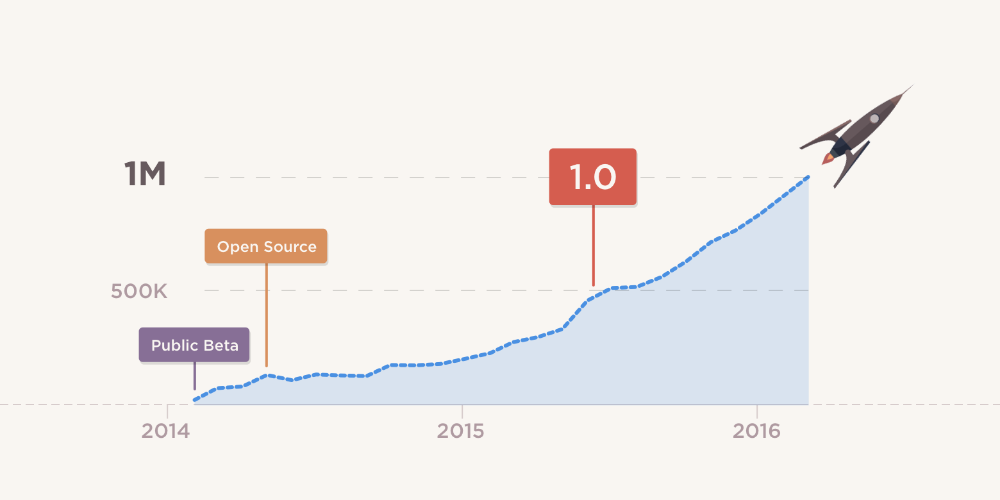

Atom Reaches One Million Active Users
We have reached an exciting milestone: one million people have launched some version of Atom in the last month. That’s three times the number of active users we had under a year ago at the one-year anniversary of Atom becoming completely open-source.

Atom has been successful because of the community that has grown around it. The people that have contributed to Atom—that have given their time, expertise, feedback, suggestions, and insight—have helped Atom improve by leaps and bounds. We also hear of exciting or just plain cool things that people are doing with Atom all of the time—like MuleSoft’s API Workbench, Jibo Robot’s SDK tools, and Facebook’s Nuclide.
It’s not just companies that are coming up with interesting ways to use Atom. Some packages written by individuals that have caught our attention recently are:
- Atomic Chrome - Syncs what you type in Atom to text inputs on web pages in Chrome so you never have to worry about losing what you wrote
- Git Time Machine - Shows an interactive plot of the current file’s Git commit history
-
Activate Power Mode - A fun package that infuses your typing with
 power
power
All of us on the Atom team appreciate the work that the community has put in to our collaborative project. We’re looking forward to what Atom will look like when we reach the next million users and hope that you are, too!